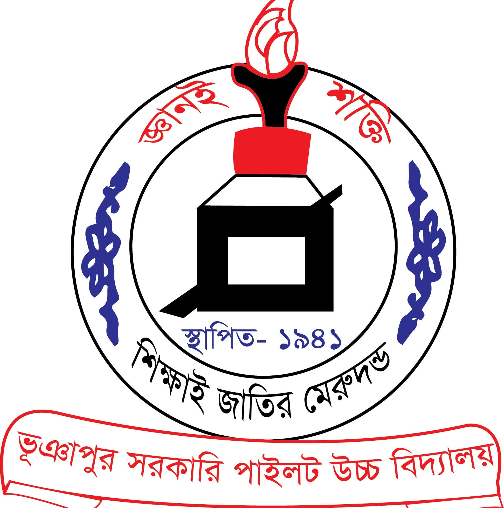

Bachelor of Science in Computer Science & Engineering

Institution: American International University - Bangladesh (AIUB)
Relevant Subjects: Object Oriented Programming, Data Structures, Database, Software Engineering, Computer Networks, Artificial Intelligence
Description: Currently pursuing undergraduate degree focusing on software development and system design.
Higher Secondary Certificate (HSC)
Institution: Ibrahim Khan Govt. College
Group: Science
Relevant Subjects: Physics, Chemistry, Mathematics, ICT
Description: Built strong foundation in mathematics and programming basics.
Secondary School Certificate (SSC)

Institution: Bhuapur Pilot High School
Group: Science
Relevant Subjects: General Science, Higher Mathematics, ICT
Description: Developed analytical and logical thinking skills.